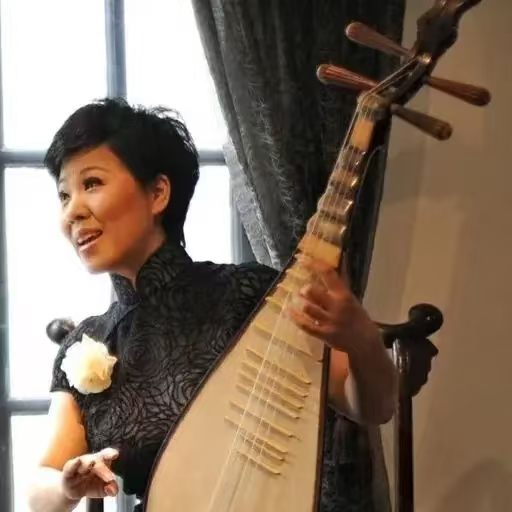

苏州评弹省级非遗传承人 · 从艺38年

周红，1968年生于苏州，自幼受家庭熏陶学习评弹艺术。她的祖父是苏州当地知名的评弹票友，父亲是评弹乐师，母亲是评弹演员，可谓评弹世家。16岁考入苏州评弹学校，师从评弹名家邢晏芝先生，主攻弹词表演。她嗓音清亮婉转，台风端庄典雅，尤其擅长"蒋调""俞调"的演唱，是当代苏州评弹艺术的中坚力量。
在评弹学校学习期间，周红系统学习了评弹的说、噱、弹、唱四大艺术手段，并深入研习了《玉蜻蜓》《珍珠塔》《三笑》等传统长篇书目。毕业后进入苏州评弹团，开始了职业演员生涯，很快成为团里的主要演员。
长篇弹词《玉蜻蜓》：周红的拿手书目之一，全篇共20回，每回约45分钟。她以细腻的表演和婉转的唱腔，将这部经典爱情故事演绎得声情并茂，深受苏州、上海等地评弹观众的喜爱。该作品多次在苏州评弹艺术节上获奖。
长篇弹词《珍珠塔》：评弹传统书目中的经典之作，周红在继承前辈名家表演精华的基础上，融入了自己的理解和创新。她塑造的方卿、陈翠娥等人物形象鲜明，唱腔处理独具匠心，被誉为当代《珍珠塔》演出的标杆版本。
弹词开篇《苏州好风光》：新编弹词开篇作品，以苏州园林、小桥流水、吴侬软语为题材，唱腔优美、词意典雅，成为周红的代表性开篇之一。该作品多次在各类文艺演出中亮相，深受观众喜爱。
2012年，周红被评为江苏省非物质文化遗产代表性传承人。2014年，她在苏州评弹艺术节中获得"优秀表演奖"。2016年，她在上海大剧院举办"周红评弹艺术专场"，首次将评弹带入现代剧场，吸引了大量年轻观众，演出票提前一周售罄，成为评弹艺术走进都市剧场的成功范例。
2018年，周红出版个人评弹专辑《吴语雅韵·周红评弹精选》，收录了12首经典开篇和选回，受到评弹爱好者的广泛好评。2019年，她受邀赴法国巴黎参加"中国非物质文化遗产展演"，在联合国教科文组织总部演出，让世界聆听了苏州评弹的独特韵味。
2021年，周红获得"江苏省德艺双馨文艺工作者"荣誉称号。2023年，她被评为"苏州市文化领军人才"，获得政府专项资助用于评弹艺术的创新和发展。
周红积极推动评弹进校园，在苏州中学、苏州市实验小学、苏州外国语学校等十余所中小学开设评弹兴趣班，累计培养学生超过1500人，其中多人已在苏州评弹学校深造。她编写的《评弹入门十二讲》校本教材，已在苏州市多所中小学推广使用。
她策划的"评弹进社区"公益演出项目，每年演出近百场，深入苏州各街道社区、养老院、文化中心，让评弹回归民间、走近大众，累计观众达数万人次，被苏州市文化广电和旅游局评为"优秀群众文化项目"。
2023年，周红发起"青年评弹人才培养计划"，已培养年轻演员12名，其中多人已在苏州评弹团担任主要演员。她还参与编写了《苏州评弹入门教程》《苏州评弹经典唱段赏析》等教材，为评弹艺术的系统化传承提供了教材支撑。
周红的事迹多次被苏州电视台、上海电视台、江苏卫视等媒体报道。2020年，苏州电视台《苏州人物》栏目对她进行了专题报道，讲述了她从艺三十余年的心路历程。2022年，她受邀参加央视《非遗里的中国》节目录制，向全国观众展示苏州评弹的艺术魅力。
在社交媒体时代，周红也积极拥抱新传播方式。她在抖音、B站等平台开设账号，定期发布评弹表演片段和教学短视频，累计粉丝超过50万，让更多年轻人了解和喜爱评弹艺术。